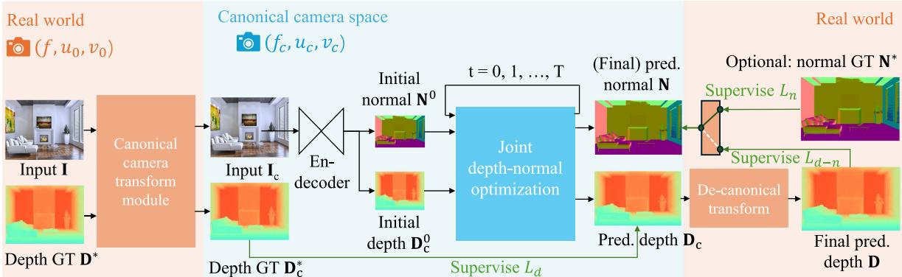
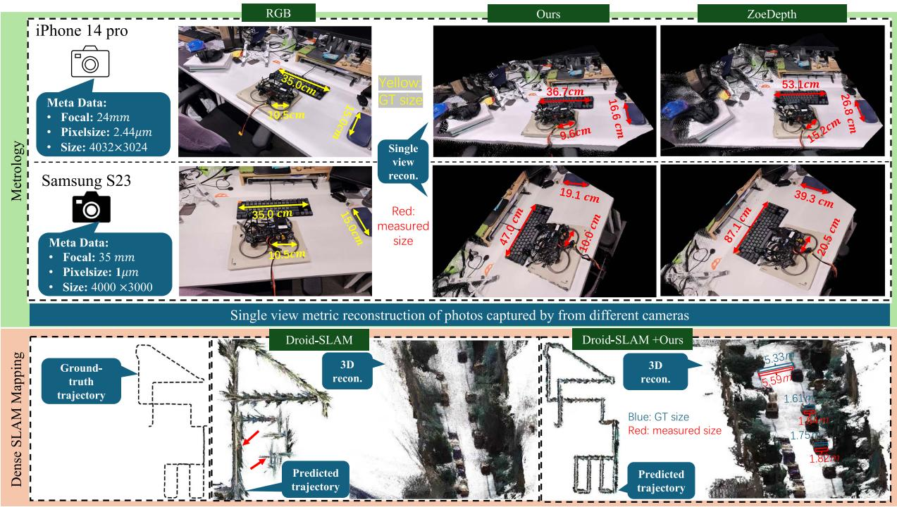

前馈重建与度量深度：SLAM3R + Metric3D v2
一篇是「一次前向就出结果」的重建系统，一篇是给单目补上「米」的零件——本块收尾，尺度暗线走到最新一站 📏
本节目标
这一节把两篇身份完全不同的论文放在一起，必须先把身份说清：SLAM3R 是一套系统（前馈网络直接从单目视频预测统一坐标系的点图，20+ FPS），Metric3D v2 是一个零件（单图零样本估计度量深度与表面法线）。要讲清两件事：① SLAM3R 的 I2P + L2W 两层结构，以及它不把相机位姿当输出这个特点的代价；② Metric3D v2 的 canonical camera transformation（标准相机变换）怎么解掉单目的度量歧义，以及它把度量深度「裸喂」给 DROID-SLAM 之后 KITTI 上的平移漂移变化。最后把这条线接回第三季 0040 导览立下的「尺度暗线六站」——本课是那条暗线的最新一站。
和前面课程怎么接
第三季 0040 导览的「尺度暗线六站」：单目缺尺度 → 双目/IMU 来补 → …… 本课的 Metric3D v2 是「用基础模型直接给单目补度量尺度」的最新答案，而 0148 DUSt3R 是那条暗线上「明确不做度量」的分支，两者要正面比较。0149 MASt3R-SLAM：同为本块的两套系统之一，用 Sim(3) 把未知尺度吸收掉；本课再给第三种态度（直接补）。0145 DROID-SLAM：Metric3D v2 的实验就是把 DROID-SLAM 当作「缺尺度」的受害者来演示。0132 RAFT：Metric3D v2 的联合迭代优化块明确受它启发，和 0145/0146 的 CorrBlock 一系同源。0124 GPS-Gaussian：「前馈式泛化」这条线在渲染侧的版本。
1. 先说人话：这两篇的身份完全不一样
0149 那节课专门强调过：这个块六篇里只有两篇「本身就是系统」。本课正好把剩下的那一篇系统（SLAM3R）和最后一个零件（Metric3D v2）放在一起，所以第一件事就是把身份摆清楚，不要混着讲：
| 比较项 | SLAM3R | Metric3D v2 |
|---|---|---|
| 输入 | 单目 RGB 视频帧序列 | 单张 RGB 图（推理时还要知道该图的焦距） |
| 输出 | 稠密三维点云（逐步对齐到全局坐标系） | 度量深度图（米）+ 表面法线图 |
| 管不管位姿 | 不把位姿当输出；位姿是从点云用 PnP-RANSAC 反推的 | 完全不管位姿，它只给「这一张图的每个像素有多远」 |
| 身份 | 系统（偏重建 / mapping） | 零件（深度 / 法线先验） |
| 尺度 | 和 0148 一脉相承，没有绝对尺度 | 正是来解决绝对尺度的——输出带「米」 |
术语先露脸：前馈（feed-forward）＝数据从输入一路往前推到底，中间不复用、不迭代、不针对这个场景做优化；I2P（Image-to-Points）＝SLAM3R 里「图 → 点」的那一层；L2W（Local-to-World）＝「局部坐标系 → 世界坐标系」那一层；度量深度（metric depth）＝带真实物理单位（米）的绝对距离，而不是「相对远近」；canonical camera（标准相机）＝一个虚拟的、所有相机都先换算过去的统一相机空间；affine-invariant depth＝只保证「相对关系」对、但可以整体乘一个系数再加一个偏移的深度——这类深度很好迁移，但丢掉了真实尺度。
2. SLAM3R：前馈网络直接从视频预测点图
SLAM3R 的思路极其直白：把单目视频切成一段段短窗口（滑窗），每一段送进一个网络直接回归出三维点图，再把各窗口的结果渐进地对齐到同一个全局坐标系。整个流程不显式求解任何相机参数——注意这句话的分量：传统 SLAM 的核心任务之一（估位姿）在这里被整个绕开了。
它有两层：
① I2P：窗口内先建局部
在窗口里挑一帧当关键帧、定下局部坐标系，用多分支 ViT 给窗口内每帧预测点图。初始窗口 L=5 帧，增量窗口 L=11 帧。论文说这一层是把 DUSt3R 扩展到多视。
② L2W：再对齐到全局
用 reservoir + 检索从历史关键帧里挑参照，把新窗口的点图对齐并形变到全局坐标系。论文说这一步免掉了显式的相机估计与昂贵的全局优化（对照 0148 的全局对齐）。
网络与训练
基于 DUSt3R 架构：ViT 编码器 24 块、解码器 12 块、线性头；权重从 DUSt3R（224×224）初始化；图像中心裁剪 224×224。损失是置信度加权的 L1（I2P 把预测与真值都按窗口内平均距离归一化，L2W 不归一化以保持与场景帧的尺度一致）。
训练数据与成本
三个数据集混合：ScanNet++、Aria Synthetic Environments、CO3D-v2（真实与合成、场景级到物体级都有），共约 85 万段 clips；用 8 张 4090D（24GB）训约 1 天。
这句话在说什么：和 0148 的 DUSt3R 是同一套思路——把预测点与真值点各自按「窗口内平均距离」归一化（$\frac{1}{\hat z}$ 与 $\frac{1}{\bar z}$）来消掉尺度歧义，再按置信度 $\widehat C^v_i$ 加权、用 L1 范数（不是平方）求和。要点在括号里那句话：归一化只在 I2P 这一层用；L2W 那一层故意不归一化，目的正是让不同窗口之间的尺度保持一致，这样它们才能拼到一起。这是示意写法，细节以原文为准。

原图注（Fig. 1）：We introduce a novel dense reconstruction system — SLAM3R. It takes a monocular RGB video as input and reconstructs the scene as a dense pointcloud. The video is converted into short clips for local reconstruction (denoted as inner-window), which are then incrementally registered together (inter-window) to create a global scene model. This process runs in real-time, producing a reconstruction...（我们提出一个新稠密重建系统 SLAM3R：输入单目 RGB 视频，把场景重建为稠密点云。视频先被切成短片段做局部重建（窗口内），再增量地互相配准（窗口间），形成全局场景模型。整个过程实时运行。）
怎么看这张图：顺着时间轴看两遍：第一遍看「窗口内」——每一小段视频各自重建出一小块；第二遍看「窗口间」——这些小块被一段一段缝起来，缝的接缝处就是相邻窗口重叠的那几帧。注意整条流程里没有任何「解相机参数」的框，位姿不是它输出的东西。
要记住的一句话：SLAM3R 把重建拆成「局部前馈 + 增量对齐」两拍，完全不碰相机参数——这是它快的原因，也是它位姿精度不如专门定位系统的原因。

原图注（Fig. 2）：System overview. Given an input monocular RGB video, we apply a sliding window mechanism to convert it into overlapping clips (referred to as windows). Each window is fed into an Image-to-Points (I2P) network to recover 3D points in a local coordinate system. Next, the local points are incrementally fed into a Local-to-World (L2W) network to create a globally consistent scene model...（系统总览：输入单目 RGB 视频，用滑窗机制切成互相重叠的片段（称为窗口）。每个窗口送进 I2P 网络恢复局部坐标系下的三维点；随后这些局部点被增量地送进 L2W 网络，形成全局一致的场景模型……）
怎么看这张图：这张图就是第 2 节那两个卡片的展开。看两处：① 滑窗是互相重叠的（不是首尾相接），重叠区就是后面缝合的抓手；② 「局部坐标系」这四个字出现了——每个窗口先用自己的一套坐标系，L2W 再把它搬到世界系。
要记住的一句话：I2P 负责「把这一小段重建出来」，L2W 负责「把这一小段接上去」；两件事分开做，才有了前馈的可能性。
2.1 硬数字：它到底多快、多准
速度
摘要写 20+ FPS，Table 1 里实测约 25 FPS（4090D）。作为对照：DUSt3R 不到 1 FPS（离线全局优化），Spann3R 超过 50 FPS（但漂移大）。
7-Scenes 重建精度
SLAM3R 平均 Acc / Comp = 2.13 / 2.34 cm；去掉置信度加权（SLAM3R-NoConf）为 2.40 / 2.24。对手：DUSt3R 2.19 / 3.24、MASt3R 3.04 / 3.90、Spann3R 3.42 / 2.41。
Replica 与位姿
Replica 上 Acc 8.41（DUSt3R 8.02，同量级）。位姿 ATE-RMSE：7-Scenes 8.41 cm、Replica 6.61 cm——但注意这两个数是从点云反推的，不是系统直接输出。
窗口消融
I2P 用默认 11 帧：Acc / Comp 2.38 / 2.03、40.11 FPS；把窗口加到 51 帧，帧率掉到 11.97 FPS。加上 L2W 全法：3.62 / 2.70、约 43 FPS。
作者自己写下的局限必须一并交代，因为它决定了这套系统适合干什么：① 不预测相机参数 → 做不了全局 BA；② 由点云反推的位姿仍不及专门做定位的 SLAM 系统。所以它更准确的身份是「稠密重建系统（偏 mapping）」，而不是一个定位优先的 SLAM。它给下游提供的价值是：免相机参数、实时的稠密点云。
3. 前馈 vs 逐场景优化：这条线到底变了什么
「前馈」这个词，最容易被当成一个工程细节，其实它是这一块最根本的观念转变，值得单独讲。
逐场景优化（传统做法）：来一段新视频，就针对它跑一遍完整的优化——提特征、匹配、初始化、BA 迭代，可能几十分钟。做完之后，这份结果只属于这一段视频；换一个场景，前面花的功夫一点也用不上。
前馈（SLAM3R / DUSt3R 这一系）：有一个训练好的网络权重，来一段新视频就做一次前向推理，直接出结果。这份权重是所有场景共用的，代价在训练时一次性付掉，推理时只是「跑一遍」。
这件事的意义有两层。第一层是速度：SLAM3R 的 25 FPS 与 DUSt3R 的不到 1 FPS，差的不是常数项，而是「要不要为每个场景重跑优化」。第二层更重要——它是「泛化」：一次前向就能出结果，说明网络学到的是「场景该怎么变成三维」这件事本身的规律，而不是背下了某个具体场景。这正是第六季 0124 GPS-Gaussian 讲的「前馈式泛化」在几何侧的对应版本。
代价也很实在：前馈网络不会为这一帧、这个场景做任何特别调整。所以它在「和训练分布像」的场景上又快又好，碰上完全没见过的成像条件就容易退化——这也是为什么 SLAM3R 要把位姿工作留给下游（用 PnP-RANSAC 反推），而不是自己宣称能做好定位。
4. Metric3D v2：给单目补上那个「米」
现在换到另一篇。前面 0148 已经说清楚：DUSt3R / MASt3R 的点图是 up-to-scale，SLAM3R 也继承了这一点。于是问题变成——单目的绝对尺度到底从哪来？
先讲清「难在哪」。有一大类深度图叫 affine-invariant（仿射不变）深度：它们相对关系是对的（近的比远的近），但可以整体乘一个系数、再加一个偏移，仍然是「同样合法」的答案。这类深度好处是容易跨数据集迁移，坏处是把真实尺度彻底丢了。论文的洞察是：焦距才是度量恢复的关键因子（传感器的像素尺寸反而不影响），因为「同样的成像大小」既可以来自「大东西在远处」，也可以来自「小东西在近处」——不把焦距固定下来，就分不清。
它的解法叫 canonical camera transformation（标准相机变换，CSTM）：训练时把各数据集的真值深度按比例缩放到一个标准相机空间，推理时再换算回该相机自己的度量。
这句话在说什么：$f$ 是这台相机自己的焦距、$f^c$ 是那个虚拟「标准相机」的焦距，两者之比 $\omega_d$ 就是把深度在两个空间之间搬来搬去的换算因子。训练时先把真值深度 $D$ 乘上它、变到标准空间 $D_c$ 去监督（这样所有相机拍的数据都能放在同一把尺子上一起训）；推理时反过来除一下，就把标准空间里的预测 $D_c$ 换回这台相机实际尺度下的深度 $D$。注意这是要点在「知道焦距」——没有 $f$ 就算不出 $\omega_d$，这也就是它局限的来源。

原图注（Fig. 9）：Pipeline. Given an input image $I$, we first transform it to the canonical space using CSTM. The transformed image $I_c$ is fed into a standard depth-normal estimation model to produce the predicted metric depth $D_c$ in the canonical space and metric-agnostic surface normal $N$. During training, $D_c$ is supervised by a GT depth $D^{*}_{c}$ which is also transformed...（流程：给定输入图 $I$，先用 CSTM 把它变换到标准空间；变换后的图 $I_c$ 送进一个标准的深度-法线估计模型，在标准空间里产生预测的度量深度 $D_c$ 与不受度量影响的表面法线 $N$。训练时 $D_c$ 由同样经过变换的真值深度监督……）
怎么看这张图：盯住中间那个 $I_c$——所有相机拍的照片，先被搬到同一个「标准相机」空间，然后才送进下游模型。这样网络只需要学「标准相机下的深度」，各相机之间的差别被前面那一步吸收掉了。另一个细节是法线 $N$：图注里写的是 metric-agnostic（不受度量影响）——这话有道理，因为法线只描述「面朝哪边」，整张深度图放大缩小，法线一点不变（论文 Fig. 8 专门画了这件事）。
要记住的一句话：这个流水线的关键动作是「先归一化相机，再估深度」，而不是让网络自己去适应成千上万种相机。
4.1 规模、数字与它最漂亮的那个实验
训练规模
16 个数据集、超过 1600 万张图，覆盖室内/室外、真实/合成，相机模型达数千种。骨干用 ViT-large，接一个受 RAFT（0132）启发的循环优化块（ConvGRU）联合迭代低分辨率深度与未归一化法线。
法线标注有多稀缺
深度标注很丰富（14 个室外深度数据集共 948.8 万张），但室外法线标注不到 2 万张。所以法线主要靠「与深度的一致性约束」和「从深度特征隐式迁移」来学——这是它声明的第三个贡献。
评测成绩
论文称在 16 个以上深度/法线基准上排名第 1（含零样本测试）。关键结论一句话：焦距是度量深度恢复的决定性因子，传感器尺寸与像素尺寸不影响。
作者自述局限
依赖已知焦距（训练与测试都假设焦距已知）；标准相机空间假设主点居中、像素是方的。
最值得记的是它那个「裸喂」实验：把 Metric3D v2 预测的度量深度不加调参地喂给当时最强的单目 SLAM——DROID-SLAM（0145），看会发生什么。KITTI 上的平移漂移（$t_{rel}$，越小越好）变化如下：
| KITTI 序列 | Seq 00 | Seq 02 | Seq 05 | Seq 06 | Seq 08 | Seq 09 | Seq 10 |
|---|---|---|---|---|---|---|---|
| DROID-SLAM 原生 | 33.90 | 34.88 | 23.40 | 17.20 | 39.60 | 21.70 | 7.00 |
| DROID + 本文深度 | 1.44 | 2.64 | 1.44 | 0.60 | 2.20 | 1.63 | 2.73 |
这组数字的分量要这么读：DROID-SLAM 本身是一个很强的系统，它在 KITTI 上的平移漂移大，不是因为位姿估得差，而是因为它没有绝对尺度可用。一旦每一帧都被喂上带「米」的深度，漂移就掉到零头。论文还补了一句限定：在 ETH3D 这种较小的室内场景上提升幅度没有 KITTI 那么大。这句话很诚实，也提示了「尺度问题在大场景里才致命」。

原图注（Fig. 3）：Top (metrology for a complex scene): we use two phones (iPhone14 pro and Samsung Galaxy S23) to capture the scene and measure the size of several objects, including a drone which has never occurred in the whole training set. With the photos' metadata, we perform 3D metric reconstruction and then measure object sizes (marked in red), which are close to the ground truth (marked in yellow). Compared with ZoeDepth, our measured sizes are closer to ground truth. Bottom (dense SLAM mapping): existing SoTA mono-SLAM methods usually face scale drift problems (see the red arrows) in large-scale scenes and are unable to achieve the metric scale, while, naively inputting our metric depth, Droid-SLAM can recover much more accurate trajectory and perform the metric dense mapping (see the red measurements). Note that all testing data are unseen to our model.（上：复杂场景的度量——用两台手机拍同一个场景并测量若干物体的尺寸，其中包含训练集里从未出现过的无人机；借助照片元数据做三维度量重建后再量尺寸（红色），与真值（黄色）很接近，比 ZoeDepth 更准。下：稠密 SLAM 建图——现有很多单目 SLAM 在大场景里会遭遇尺度漂移（红箭头）且拿不到度量尺度；而把我们的度量深度朴素地输入 Droid-SLAM 后，它能恢复准确得多的轨迹并做度量稠密建图（红色测量值）。注意所有测试数据模型都没见过。）
怎么看这张图：分上下两半看。上半是「度量到底有什么用」的具象演示——两台不同的手机、拍同一个场景，量出来的尺寸接近真值，而且量的还是训练时没见过的无人机，这是零样本泛化的直接证据。下半是「尺度漂移长什么样」——红色箭头指出传统单目 SLAM 在大场景里轨迹会越走越偏、且始终没有「米」；下面那组是把本文深度喂进去之后的结果。
要记住的一句话：这一张图同时回答了「度量尺度有什么用」（上半）与「它解决了谁的痛」（下半）——被解决的那个痛，就是第三季 0040 那条尺度暗线。
5. 尺度暗线六站的最新一站
第三季 0040 导览课立过一条「尺度暗线」：单目没有尺度，于是整个视觉 SLAM 的历史里，人们一直在用各种办法把这个「米」找回来。这条线我们走过好几年，现在到了最新一站。把账摆出来：
| 站 | 课号 | 尺度的来源 | 代价 / 前提 |
|---|---|---|---|
| 单目早期 | 0041–0045 | 没有——只能整体给一个未知尺度 | 输出不是「米」，只能看形状与相对比例 |
| 双目 / RGB-D | 第二–三季 | 基线长度 / 深度传感器 | 要多一个传感器，双目还得已知基线 |
| IMU / 惯性 | 0057–0066 | 加速度计 + 重力，把尺度从动力学里「观测」出来 | 要能激励、要处理偏置与重力对齐（0064 专门讲初始化） |
| GNSS / 载波相位 | 0065 / 0066 | 卫星伪距 / 多普勒 / 载波相位 | 要有天空视野；模糊度求解很难（0066） |
| 不做度量 | 0148 / 0149 | 放弃：用 Sim(3) 把未知尺度当成状态吸收掉 | 多段重建能保持一致，但依然给不出「米」（0149） |
| 基础模型直接补 | 本课 0150 | Metric3D v2 用标准相机变换，从单张图直接预测度量深度 | 要已知焦距；标准相机空间假设主点居中、方形像素 |
这一站新在哪：前面几站要么加传感器（双目、IMU、GNSS），要么放弃尺度（Sim(3)）。Metric3D v2 提供的是第三种：不加传感器、也不放弃，而是让一个见过 16 个数据集、数千种相机的模型直接把尺度「猜」出来。这正是「基础模型当零件」这套思路的典型收益——把一件历史上要额外硬件才能办到的事，变成一个对单张图的推理问题。
但它没有把这条线画上句号。它的前提写得很清楚：依赖已知焦距，标准相机空间还假设主点居中、像素方形。也就是说，如果你手上的视频连焦距都不知道（对照 0149 专门处理的那种场景），这一站就接不上。所以更准确的表述是：尺度这条暗线被推进了一大步，但还没到终点——这也正是 0151 收官课要列进「仍未解决问题」清单里的一条。
6. 两张自绘图：前馈是什么、标准相机在干什么
这张图在画什么：左右两条流程。左边是逐场景优化：一段从没见过的视频进来 → 为它单独跑一遍提特征、匹配、BA → 得到一个只属于这段视频的结果；换一段视频，整套从头再来。右边是前馈：视频进来 → 一次前向推理（同一套权重，不再优化）→ 当场出结果。
怎么看这张图：① 两条流程的输入和输出看起来一模一样，差别全在中间那个方框里——左边是「优化」，右边是「前向」；② 注意左右两边第二行那句话的对比：左边是「前面花的功夫全作废」，右边是「还是同一套权重」——这就是成本结构的不同；③ 但要小心别读过头：右边并不是「什么都算对了」，它只是省掉了场景级的优化，代价是它不会为这一帧做任何特别调整。
要记住的一句话：前馈把「每个使用者各付一次」变成了「训练时付一次、推理时几乎免费」——这和 0147 那笔 22,016 GPU-hours 的账是同一个经济学。
这张图在画什么：左上是两台不同相机拍的同一件家具：手机 A 用广角、站得近；手机 B 用长焦、站得远。它们成像的大小可能很接近，但真实距离差很多。中间那个箭头把它们都送进「标准相机空间」——焦距、主点、像素形状全部归到同一套。右边是出来的两样东西：① 带「米」的度量深度图（图中用蓝色深浅表示远近）；② 表面法线（一堆垂直于表面的小箭头）。
怎么看这张图：① 盯住中间那句话「换算因子 = 标准焦距 ÷ 本机焦距」——它对应正文那个 $\omega_d=f^c/f$，也解释了为什么必须知道本机焦距；② 右边第一样为什么能是「米」：因为网络只在标准空间里学深度，而标准空间的焦距是已知的常数，尺度就被钉住了；③ 右边第二样（法线）特别标了「不受尺度影响」——把深度图整体放大或缩小，法线一个都不变，这也是它能从深度标注里「顺带学出来」的原因。
要记住的一句话：标准相机这件事的本质是先把「相机」这个变量固定住，再去估深度；所以它的前提是「知道自己的焦距」，这也正是它还没把尺度问题彻底解决的地方。
互动：Metric3D v2 的绝对尺度是从哪来的？
下面哪句最准？
正确。论文的洞察是「焦距才是度量恢复的关键因子」（传感器与像素尺寸不影响）。CSTM 的做法是：训练时按 ω_d = f^c / f 把各数据集的真值深度缩放到标准相机空间，让所有相机数据放在同一把尺子上一起训；推理时再除以 ω_d 换回本机尺度。所以前提是该图的焦距已知。作者自述局限里也写了这一条，另外标准相机空间还假设主点居中、像素方形。
不对。它是单图模型——输入就是一张 RGB 图（加上该图的焦距），没有视频、也没有多帧之间的几何关系可用来估尺度。它靠的是「知道焦距 + 把相机归一化到标准空间 + 在标准空间里学深度」这条链。把它记成「从视频里估尺度」会同时搞错两件事：一是它的输入不是视频，二是它的尺度来源不是几何优化而是固定的焦距换算。
7. 读完你应该能回答
- SLAM3R 和 Metric3D v2 的身份差别是什么？为什么说「一个是系统、一个是零件」？
- SLAM3R 的 I2P 与 L2W 各负责什么？它为什么「不把位姿当输出」，代价是什么？
- 它训练时的归一化为什么只在 I2P 层做、L2W 层故意不做？
- 「前馈」省掉的到底是哪一件事？它对场景数与成本的结构产生了什么影响？
- Metric3D v2 的 canonical camera transformation 在做什么？为什么说「焦距是关键因子」？
- 把 Metric3D v2 的深度喂给 DROID-SLAM，KITTI 上平移漂移从多少降到多少？这说明 DROID-SLAM 原来的问题出在哪？
- 第三季 0040 那条「尺度暗线」，本课这一站新在哪？它还没解决什么？
课后练习（答案收起，点开看解析）
- 为什么说「焦距才是度量深度恢复的关键因子」？请从「同样大小的成像，可能来自不同的真实距离」这个角度解释。
展开查看答案
成像大小由「物体真实尺寸 ÷ 距离 × 焦距」决定。所以一张图上某个物体占了 200 像素，可能是「一个 1 米的东西在 5 米处、焦距 1000」造成的，也可能是「一个 2 米的东西在 10 米处、焦距 1000」，甚至「一个 1 米的东西在 5 米处、焦距 2000」。
如果焦距已知，这个等式里就只剩「尺寸 × 距离」这一个乘积未知——虽然还是不能唯一确定，但至少把一个乘数钉住了，网络可以从大量数据里学到「在这类场景里、这个焦距下，这个像素尺寸最可能对应多少米」。如果焦距也未知，那乘数全都飘着，尺度就彻底没法定。
论文还专门排除了另一个嫌疑：传感器尺寸与像素尺寸不影响。理由是它们只改变「一个像素在多宽的物理平面上成像」，而这个效应已经被焦距与分辨率吸收掉了——真正决定「像素 → 三维距离」换算的是焦距。这就是 CSTM 里换算因子写成 $f^c/f$ 的原因。
- SLAM3R 为什么不预测相机位姿？这样做换来了什么、又丢掉了什么？
展开查看答案
为什么：它的目标是「实时的稠密重建」，而一旦要把相机参数当成网络输出，训练目标、损失设计、以及对相机模型的假设都会进来（对照 0149 花了大力气去放宽相机模型假设）。SLAM3R 选择把这件事整个绕开：网络只负责「每个像素对应哪个三维点」，位姿是下游从预测出的点云用 PnP-RANSAC（需要真值内参）反推出来的。
换来了什么：① 流程极简、可以做成纯前馈，因而能 20+ FPS；② 不需要为相机参数设计额外监督或约束；③ 重建精度与完整度在多个基准上是 SOTA 量级（7-Scenes 平均 2.13 / 2.34 cm）。
丢掉了什么：论文自己写了两条：① 不预测相机参数 → 无法做全局 BA，也就是失去了「把整条轨迹与整张地图一起联合优化」的能力（对照 0149 后端那个固定首帧 7 自由度的全局优化）；② 由点云反推的位姿仍不及专门做定位的 SLAM 系统。所以它是一个偏 mapping 的系统，而不是定位优先的 SLAM。
- 用一句话向别人解释「前馈」和「逐场景优化」的区别，并说明为什么这个区别对成本结构很重要。
展开查看答案
一句话版本：逐场景优化是「每来一个场景就现算一遍，算完就扔」；前馈是「训练时把该学的都学进权重里，来一个场景只跑一遍前向」。
为什么成本结构重要：这不是「快一点慢一点」的问题，而是成本怎么摊的问题。逐场景优化的成本随「场景数」线性增长——第 100 个场景和第一个场景一样贵；前馈的成本一次性付在训练里，推理时的边际成本几乎为零，用的场景越多越划算。
这与 0147 里 DINOv2 那笔账（22,016 GPU-hours、9.7 MWh）是同一个经济学：基础模型的价值主张就是「一次付清、大家共享」。反过来也要看清它的代价——前馈网络不会为当前这一帧、这一个场景做任何特别调整，所以它更依赖「测试数据和训练分布别差太远」。SLAM3R 把位姿工作交给下游、DUSt3R 承认精度不如专门方法，都是这个代价的具体形态。
- 把 0148、0149 和本课放在一起：面对「单目没有绝对尺度」这件事，三篇各自选了什么态度？各自的代价是什么？
展开查看答案
0148 DUSt3R：不管。训练时就把尺度归一化掉，输出明确是 up-to-scale。代价是只能给相对关系，说不出「米」。好处是训练简单、跨数据集拼接容易。
0149 MASt3R-SLAM：吸收。用 Sim(3) 位姿（多一个尺度 $s$）把各帧对之间的尺度不一致当成待估状态吸收进优化，并固定首帧的 7 个自由度消除规范自由度。代价是——它能让多段重建在同一个（仍然未知的）尺度下保持一致，但依然给不出「米」；好处是不需要标定、不需要外部传感器。
0150 Metric3D v2：直接补。用标准相机变换把不同相机的数据对齐到一个标准空间，在那个空间里学度量深度，推理时再换算回本机尺度，输出带米的绝对距离，并且把这份深度「裸喂」给 DROID-SLAM 就能让 KITTI 上的平移漂移从 33.90 量级掉到 1.44 量级。代价是必须已知焦距，标准相机空间还假设主点居中、像素方形。
合起来看：第三种态度在「不需要额外硬件」这一点上明显更强，但它的前提（焦距已知）恰好是第二种态度专门要甩掉的东西（0149 的卖点就是「相机模型未知也能跑」）。这两条线目前还没合流——这正是 0151 收官课要列进未解决问题的那一条。